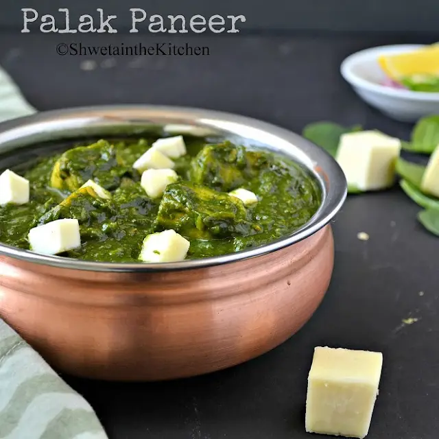

The Best palakpaneer Recipe

INGREDIENTS
- 5-6 Bunches Spinach Leaves
- 3 Green Chillies
- 200 gms Paneer
- 1 cup Chopped Onions
- 1 tsp Ginger Garlic Paste
- 1/4 cup Oil
- 3 tbsps Butter
- 1 tsp Ghee
- 3 tbsps Fresh Cream
- 1 tsp Cumin Seeds
- 3 Red Chillies
- 1 tsp Mirchi Powder
- 1 tsp Salt
- 1 tsp Coriander Powder
- 1 tsp Kasuri Methi (Dried Fenugreek leaves)
- 1 tsp Roasted Cumin Seeds Powder
- 1/2 tsp Garam Masala
- 150 ml Water
INSTRUCTIONS
- Snip off Spinach Leaves, cook for 3-4 minutes in boiling water and put immediately into cold water. This will ensure that the Spinach Leaves do not change color.
- Make a smooth paste of the cooked Spinach and Green Chillies adding 1/4 cup of water.
- Heat oil in a pan and add Cumin Seeds and Red Chillies and fry.
- Then fry onions until they turn golden and mix Ginger Garlic paste and fry.
- Add the Spinach paste, Mirchi Powder, Garam Masala, Coriander Powder, roasted Cumin Seeds Powder, Salt, crushed Kasuri Methi and mix well. Cook covered on a medium flame until oil separates from the Spinach paste.
- Add butter and mix well and cook until butter melts and gets mixed in the Spinach.
- Once Oil separates, add 150 ml hot Water and let it become thick.
- Then take Paneer pieces, soaked in lukewarm water for 15 minutes, and add to the Spinach paste and cook for 10 minutes without letting the pieces crumble.
- Add 1 tsp Ghee for fragrance and Fresh Cream, if you like, and remove it from the fire. There you have Palak Paneer than has restaurant taste.
Back to Homepage